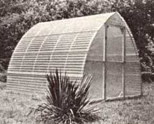
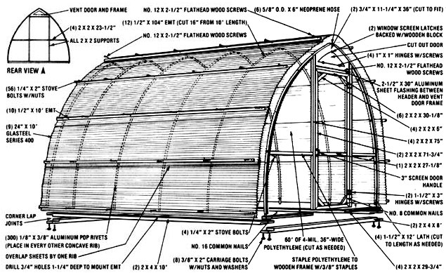

The most affordable 80 square feet of sun-heated growing space we've ever seen:
If you've priced greenhouses lately-even the supposedly "low-cost" pre-fab models-it should come as no surprise that some of the little suncatchers can set you back $800 or more. Nonetheless, for those folks who enjoy multi-season gardening (or for people who depend on having a supply of homegrown edibles throughout most of the year), a greenhouse can be a real necessity.
Fortunately, we've found an answer: MOTHER'S researchers have come up with an 8' X 10' freestanding structure that [1] has proved itself to be an excellent plant habitat, [2] can be assembled in two days of steady work, and [3] costs about $140 to build.
The solar "Quonset hut" is essentially just a tubular-ribbed skeleton that's fastened to a 2 X 4 frame at its base and covered with a layer of fiberglass-reinforced plastic. Vents are included at the structure's roof peaks to permit airflow (and to let excess heat escape), and there's an entry door at one end that can provide extra ventilation as needed.
There are just a few construction tips that we'd like to pass along to anyone intending to build our "garden under glass". First of all, the 1/2" electrical metallic tubing ribs should be shaped with an arc roller . . . and MOTHER has taken care of that by designing a simple little gadget which not only forms the conduit for this greenhouse, but can be made to handle a variety of tube-curving jobs.
It's important, too, to be sure that- after you've cut the 12 vertical supports to their required 104" length and bowed them-there is a distance of 97 inches between the innermost points of the ends of each tube. (If that's not the case, you must readjust your roller.) Flexible plastic pipe can also be used for the tubeular skeleton.
Remember also that-because of differences in tools, workmanship, and the like-not every homebuilt greenhouse will have exactly the same dimensions as those given here. To avoid mistakes, double-check your measurements before cutting the wooden end framing components . . . and custom-fit pieces if you have to. (Here's one more hint: When buying the polyethylene plastic to cover the structure's end walls, check your local surplus or salvage houses . . . they often have excellent prices on odd-sized sheets. For instance, we were able to purchase a number of 4-mil sections, equaling 3' X 100', for $4.95! )
We think you'll find that this low-budget sun shed will extend your growing season considerably . . . especially if you live in anything but the harshest of U.S. climates. And-should you happen to be a newcomer to the healthful world of homegrown foods-you'll discover that you couldn't ask for a better ( or less costly) "starter" greenhouse!
EDITOR'S NOTE: If you're unsure of your ability to construct the greenhouse from the drawings and information provided here, complete step-by-step plans (packed with clear, descriptive photographs) are available on the Mother Earth News shopping page.
|
 |
 |
|